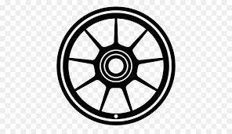

Fabricars
Louis Renault
(París, 1877 - id., 1944) Ingeniero francés creador de la marca de coches que lleva su nombre, actualmente una de las líderes del mercado mundial. Al igual que Carl Benz, Gottlieb Daimler, Henry Ford, Giovanni Agnelli o su compatriota André Citroën, Louis Renault se desempeñó a la vez como ingeniero y fabricante y fue uno de los pioneros de la industria automovilística, cuyo fulgurante despegue caracterizaría la segunda etapa de la revolución industrial.